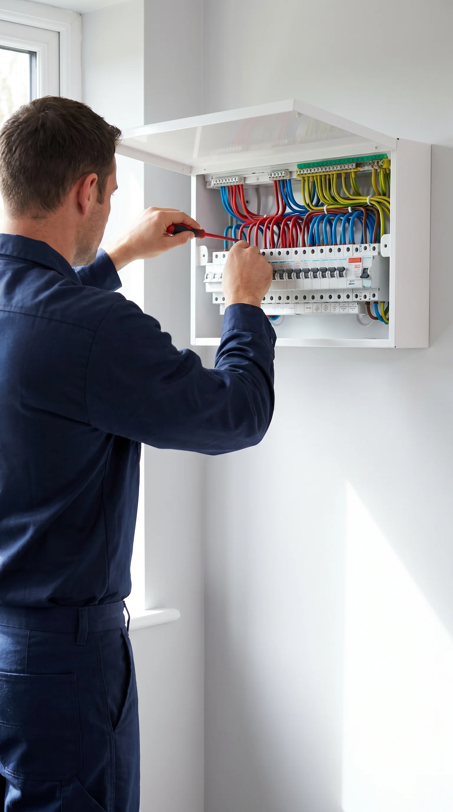
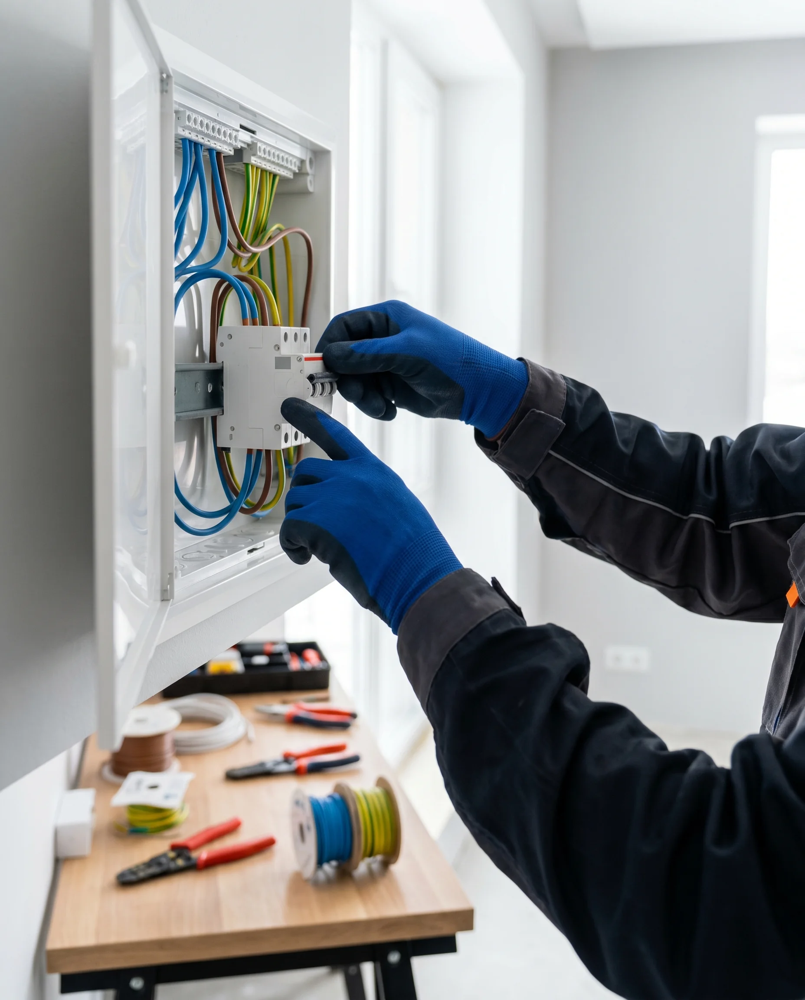
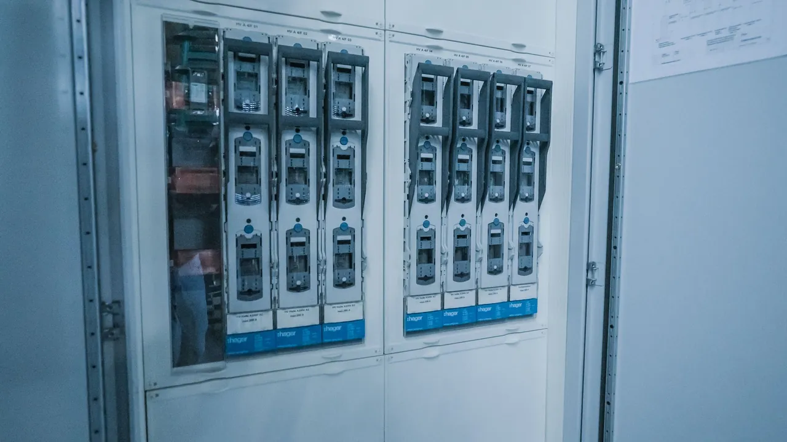

Ihr Elektriker in Tübingen
Elektroinstallation, Industrie & Gewerbe, Photovoltaik und Notdienst: DÜRR Elektrotechnik aus Ofterdingen bei Tübingen – termintreu, fair und alles aus einer Hand. Für Privat, Gewerbe und Industrie.
Ein Ansprechpartner für alles rund um Strom – von der Steckdose bis zur Industriehalle.
DÜRR Elektrotechnik – in der Region auch als Elektro Dürr bekannt – ist Ihr Elektriker in Tübingen: ein inhabergeführter Meisterbetrieb aus Ofterdingen im Landkreis Tübingen, seit über 15 Jahren im Einsatz in der Stadt und den umliegenden Gemeinden.
Unser Kern ist die klassische Elektrotechnik: Elektroinstallation für Privat und Gewerbe sowie Projekte für Industrie & Gewerbe – ergänzt um Photovoltaik, Stromspeicher, Wallbox, Smart Home und den Elektro-Notdienst. Planbar, termintreu, alles aus einer Hand.
Elektriker-Leistungen in Tübingen & Umgebung
Vom Einfamilienhaus bis zur Produktionshalle – jede Leistung sauber geplant und verlässlich umgesetzt.

Elektroinstallation
Neubau, Altbausanierung, Zählerschrank und Erweiterungen – nach aktueller VDE-Norm, für Privat und Gewerbe.
Mehr erfahren
Industrie & Gewerbe
Elektroinstallation, Hallenbeleuchtung, Datennetze und Schaltschrankbau – auch im laufenden Betrieb.
Mehr erfahrenPhotovoltaik & Speicher
Eigenen Strom erzeugen und speichern – Planung, Installation und Anmeldung.
Mehr erfahren →Wallbox & E-Mobilität
Das E-Auto sicher und günstig zuhause laden – inklusive Anmeldung.
Mehr erfahren →Smart Home & Sicherheit
Licht, Beschattung und Sicherheitstechnik – mit KNX, Alarm- und Videotechnik.
Mehr erfahren →Elektro-Notdienst
Stromausfall oder Störung? Schnelle Hilfe – zu fairen Festpreisen.
Mehr erfahren →Eigenen Strom erzeugen –
aus einer Hand
Photovoltaik, Stromspeicher und Wallbox vom regionalen Fachbetrieb – sauber aufeinander abgestimmt. Wir planen, installieren und melden an, damit sich Ihre Energie wirklich rechnet.
- Beratung & kostenlose Dachprüfung
- PV, Speicher und Wallbox kompatibel kombiniert
- Anmeldung beim Netzbetreiber & §14a EnWG inklusive
Warum wählen Kunden DÜRR Elektrotechnik?
Termintreu
Wir kommen, wenn wir es zusagen – und sind erreichbar, wenn Sie uns brauchen.
Fair & transparent
Klarer Kostenvoranschlag, keine versteckten Kosten.
Aus einer Hand
Von der Steckdose bis zur Photovoltaik – ein Ansprechpartner für alles.
Meisterqualität
Erfahrenes Team, kontinuierlich weitergebildet auf neuestem Stand der Technik.
Die Menschen hinter DÜRR Elektrotechnik
Ein eingespieltes Team aus Meistern, Gesellen und Auszubildenden – persönlich für Sie im Einsatz in Tübingen, Ofterdingen und der ganzen Region.


Das sagen Kunden aus der Region
Echte Projekte, echte Stimmen: 5,0 Sterne bei Google – und Kunden, die vor der Kamera erzählen, wie die Zusammenarbeit gelaufen ist.
 Video folgt
Video-Kundenstimme · Industrie
Video folgt
Video-Kundenstimme · Industrie
 Video folgt
Video-Kundenstimme · Gewerbe
Video folgt
Video-Kundenstimme · Gewerbe
 Video folgt
Video-Kundenstimme · Photovoltaik
Video folgt
Video-Kundenstimme · Photovoltaik
In ganz Tübingen
schnell vor Ort
Unser Sitz in Ofterdingen liegt mitten im Landkreis Tübingen – nur wenige Minuten von der Stadt entfernt. Kurze Wege bedeuten kurze Reaktionszeiten, mit fest geplanten Terminen, auf die Sie sich verlassen können.
- Tübingen-Altstadt & Zentrum
- Lustnau & Derendingen
- Weststadt & Südstadt
- Pfrondorf & Bebenhausen
- Hirschau & Unterjesingen
- sowie Rottenburg & Umland
Auch über Tübingen hinaus für Sie da
Unser Sitz in Ofterdingen liegt verkehrsgünstig mitten in der Region – mit kurzen Wegen in die Nachbarstädte. Für die größeren Einsatzgebiete finden Sie hier eigene Seiten.
Reutlingen
Stuttgart
Lassen Sie uns über Ihr Projekt sprechen
Ob Elektroinstallation, Industrieprojekt, Photovoltaik oder ein dringender Notfall – schreiben Sie uns kurz Ihr Anliegen. Wir melden uns innerhalb von 24 Stunden mit dem nächsten Schritt.
Ihr Elektrofachbetrieb für Tübingen – zuhause in Ofterdingen
Unser Sitz in Ofterdingen liegt im Landkreis Tübingen, nur wenige Minuten südlich der Stadt – kurze Wege in alle Stadtteile und Umlandgemeinden.
Dürr Elektrotechnik GmbH & Co. KGEin Unternehmen der GREENOX Gruppe
Brunnenstraße 10
72131 Ofterdingen
07473 9512840
info@duerr-elektrotechnik.de
Öffnungszeiten: Mo–Fr 08:00–17:00 Uhr
Elektro-Notdienst nach Vereinbarung
Häufige Fragen an Ihren Elektriker in Tübingen
Wie schnell sind Sie als Elektriker in Tübingen vor Ort?
Sehr schnell – unser Sitz in Ofterdingen liegt im Landkreis Tübingen, nur wenige Minuten von der Stadt entfernt. Termine planen wir verlässlich und halten sie ein.
In welchen Tübinger Stadtteilen arbeiten Sie?
In allen – von der Altstadt über Lustnau, Derendingen, Weststadt und Südstadt bis Pfrondorf, Hirschau, Bebenhausen und die Umlandgemeinden wie Rottenburg, Kusterdingen und Gomaringen.
Arbeiten Sie für Privat, Gewerbe und Industrie?
Ja – von der privaten Elektroinstallation über Gewerbeobjekte bis zu Industrieprojekten. Komplette Elektrotechnik aus einer Hand, mit einem festen Ansprechpartner.
Was kostet ein Elektriker in Tübingen?
Das hängt vom Umfang ab – deshalb arbeiten wir mit transparenten Festpreisen statt grober Stundenschätzungen: Sie erhalten vorab einen verbindlichen Kostenvoranschlag ohne versteckte Kosten. Für viele Standardleistungen (z. B. Steckdose, Zählerschrank, Wallbox-Installation) nennen wir Ihnen schon am Telefon einen Richtwert.
Installieren Sie Photovoltaik inklusive Stromspeicher?
Ja. Wir planen, installieren und melden Ihre PV-Anlage mit passendem Stromspeicher an – alles aus einer Hand, von der Beratung bis zur Inbetriebnahme.
Übernehmen Sie die Installation einer Wallbox?
Ja, wir installieren Wallboxen von 11 bis 22 kW fachgerecht, kümmern uns um die Anmeldung beim Netzbetreiber und beraten Sie zu möglichen Förderungen.
Bieten Sie einen Elektro-Notdienst in Tübingen an?
Ja. Bei Stromausfall, Kurzschluss oder defekten Anlagen sind wir über unseren Elektro-Notdienst schnell vor Ort – mit fairen Festpreisen statt überzogener Notdienst-Zuschläge.
Sind Sie auch außerhalb von Tübingen im Einsatz?
Ja, im gesamten Landkreis und den Nachbarregionen – eigene Seiten finden Sie für Reutlingen und den Großraum Stuttgart.